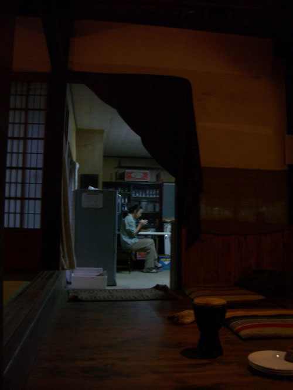
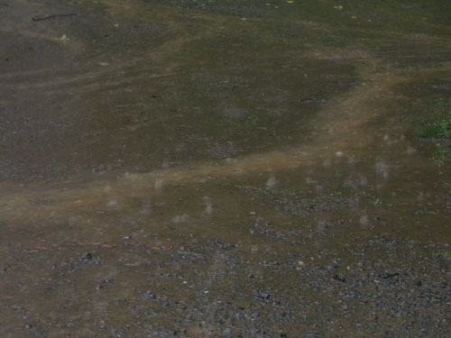
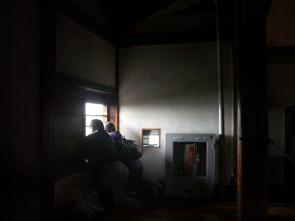
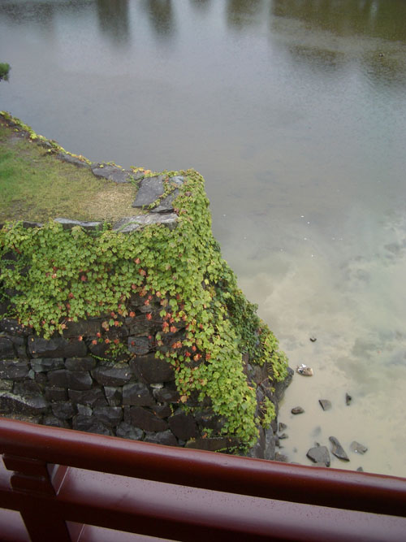
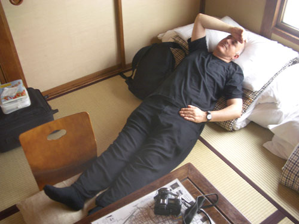

| < | > |
| On | [2004-10-20 01:23] |
| When we'd been up in the trees behind the camp site we'd discussed with Yuichi our plans for the coming week. I had originally thought of going to Nachi Falls on the Kii Peninsula. I'd read in a travel book that one could stay in a monastery nearby, and that evoked certain fantasies. But I'd also read that that area was one of the wettest in Japan. The alternative was to head back to Kyoto via the Kiso Valley. "Why not stay in Matsumoto? When I worked in Shirahone, at the onsen, I used to go there to buy vegetables. If I missed the last bus back I used to stay in a little ryokan which has a very good reputation among Japanese people." Decided. We booked by phone later in the day. The problem was how to get there. Yuichi had to start work early on Monday morning. He would have to drive us down to the nearest station, Fujino, at first light. We'd have to get up at six.  It really was pouring down...  but we wrestled our sleepy heads into Mrs Ota's car (oops, Yuichi's van didn't have enough petrol) and descended in alternating curves the full length of Doshi-mura, the 30km "village". At Fujino it was suddenly goodbye. Inside I wanted to make a deep bow, firmly shake his hand, and then hug him. Eastern, Western, and New Age. But there we were standing in the rain at the back of the car with our bags in our hands. So I said "A million thanks!" and he laughed and we all moved on. * Little country train full of school children and salary men waiting to go to work. We changed at Kofu to an express, and were whisked through the mist to Matsumoto, 9:38. The lady at the tourist office spoke perfect english, with polite round vowels. Would it rain tomorrow? "No, there will be sunshine tomorrow." Ok. We trundled our bags up through the clean quiet streets. This was a nice town. We could continue to be happy. As we approached where the ryokan should be, a broad friendly smile shone out from an upper window. Bedclothes were being changed. That's it, the Marumo. We were very early, perhaps too early... but no, our sweet little hostess soon got permission from a big casual man who seemed to be the boss, and then hurriedly took us up to our room – she had the coffee shop to get back to. * Matsumoto has the oldest original castle in Japan. It's the real thing, not some re-fabricated attraction. We all had to take off our shoes and carry them in a plastic bag. Umbrellas too. The stair were seriously steep. Towards the top I found this couple kneeling by the window. I was so happy to capture their moment. That's friendship.  Here we were inside a samurai movie. I couldn't resist imitating the walk – quick short stomping steps – stomp stomp stomp. Nor could I resist a tourist brochure shot.  We had got up early, we were tired. Back to the ryokan to rest.  That night we tried unsuccessfully (again) to find somewhere interesting to eat, then rolled out our futons, watched some old cowboy movie, and slept. |
|